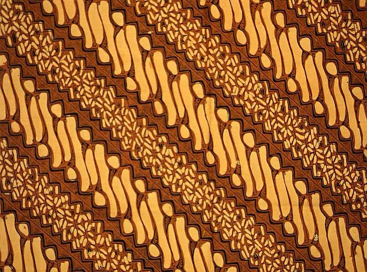
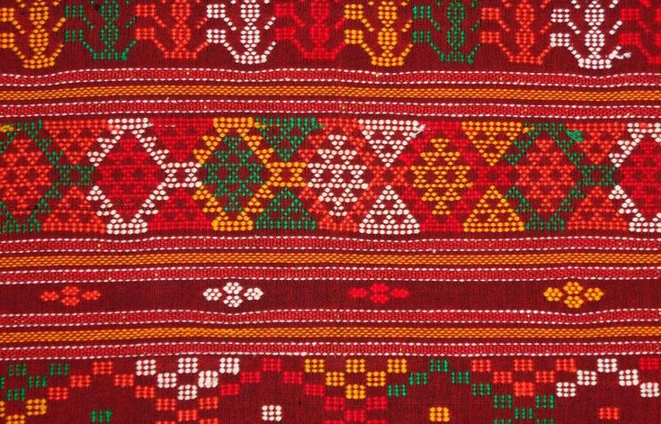
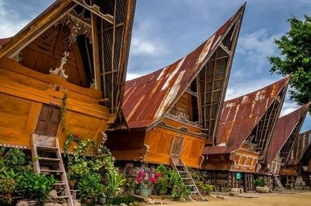
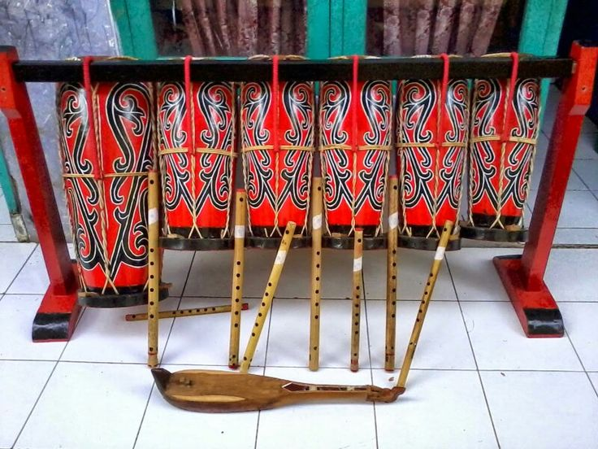
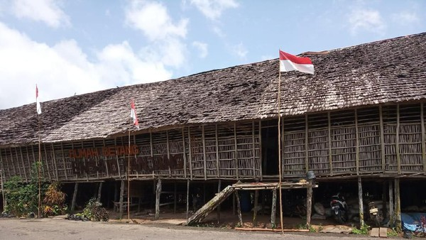
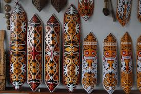
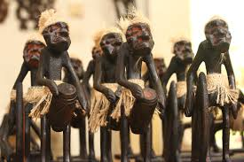
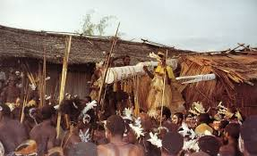
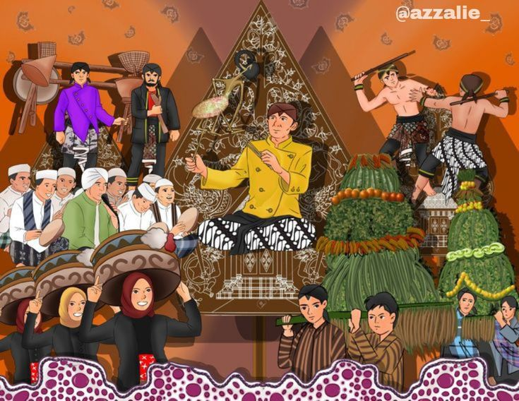
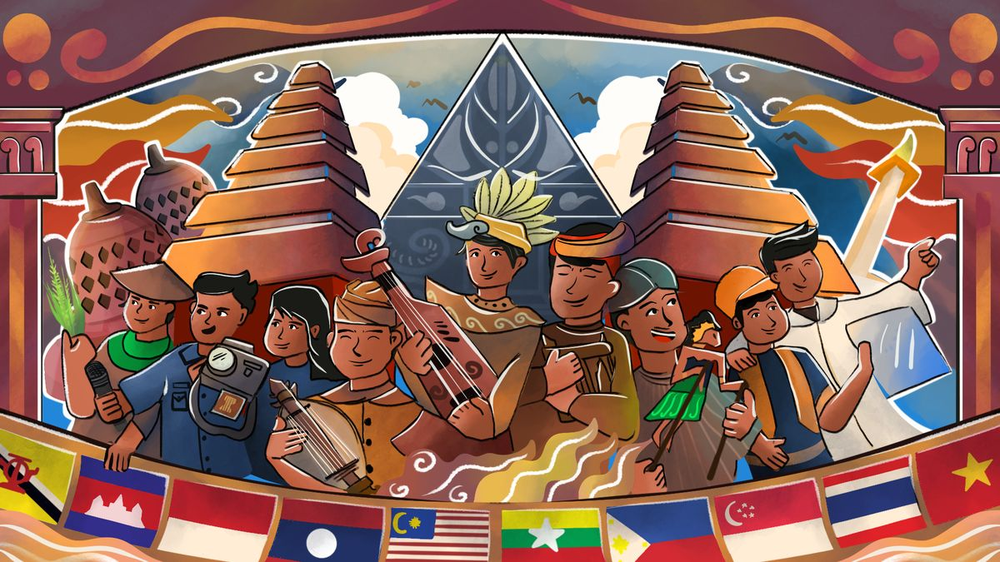

🏛️ Filosofi Bangsa

Bhinneka Tunggal Ika
Bhinneka Tunggal Ika merupakan semboyan bangsa Indonesia yang memiliki arti "Berbeda-beda tetapi tetap satu jua." Semboyan ini menjadi lambang persatuan masyarakat Indonesia yang memiliki beragam suku, agama, budaya, bahasa, adat istiadat, dan tradisi.
Kalimat Bhineka Tunggal Ika berasal dari kitab Sutasoma karya Mpu Tantular pada masa Kerajaan Majapahit. Makna dari semboyan ini adalah bahwa perbedaan bukanlah penghalang untuk hidup rukun, saling menghormati, dan bekerja sama demi mencapai tujuan bersama sebagai bangsa Indonesia.
💡 Penerapan Bhinneka Tunggal Ika
Dalam kehidupan sehari-hari, penerapan semboyan ini dapat diwujudkan dengan:
Toleransi & Hormat
- Menghargai perbedaan pendapat dan keyakinan di lingkungan masyarakat.
- Menjaga toleransi antar umat beragama demi kenyamanan bersama.
Persatuan & Sosial
- Tidak membeda-bedakan latar belakang suku, agama, maupun budayanya.
- Mengutamakan persatuan, kesatuan, serta semangat gotong royong.
Keagungan Budaya Jawa
Budaya Jawa dikenal dengan filosofi halus, kesenian wayang kulit, gamelan yang memukau, serta batik dengan motif bermakna mendalam.

🎨 Batik Keraton
Motif Parang dan Kawung yang mencerminkan simbol keagungan, keindahan, dan kesucian.
🎭 Wayang Kulit
Seni pertunjukan bayangan legendaris yang sarat akan pesan moral dan kisah epik kehidupan.

🎵 Gamelan
Orkestra musik tradisional instrumen perkusi yang menjadi jiwa dalam harmoni perayaan Jawa.
Kekuatan & Identitas Batak
Suku Batak dari Sumatera Utara dikenal dengan keberanian, kecerdasan, dan ikatan kekerabatan adat yang sangat kokoh.

🧣 Kain Ulos
Kain tenun sakral masyarakat Batak yang menjadi simbol restu, kehangatan, perlindungan, dan status adat.

🏠 Rumah Bolon
Arsitektur rumah adat tradisional Batak yang megah menyerupai bentuk perahu, sarat filosofi garis hidup.

Drum Gondang
Ensembel musik ritual perkusi Batak sebagai sarana penghubung komunikasi spiritual spiritual leluhur.
Penjaga Hutan Kalimantan
Suku Dayak hidup selaras harmoni bersama alam rimba melalui arsitektur komunal, seni ukir eksotis, dan hukum adat pelestarian.

🏠 Rumah Betang
Pusat interaksi sosial kehidupan komunal Dayak yang menampung ratusan keluarga dalam satu atap silaturahmi.

🪵 Seni Ukir
Motif lengkungan geometris flora-fauna khas tameng dan dinding perisai, melambangkan kosmologi spiritualitas alam.
🌿 Kearifan Alam
Tradisi kelola hutan adat secara bijak yang telah diwariskan turun-temurun selama ribuan tahun lamanya.
Seni & Jiwa Asmat
UNESCO mengakui karya seni ukiran patung kayu Suku Asmat Papua sebagai salah satu warisan mahakarya dunia yang mengagumkan.

🗿 Ukiran Kayu
Mahakarya seni pahat tanpa sketsa kasar, perwujudan fisik tertinggi penghormatan kepada arwah leluhur.
🛶 Perahu Lesung
Simbol kendaraan sakral penyeberangan transisi spiritual menuju dimensi alam baka leluhur.

🔥 Ritual Adat
Upacara tari penyambutan sakral penghubung keharmonisan generasi suku yang hidup dengan pendahulu.
📸 Galeri Digital: Dokumentasi Adat

Pesona Kebersamaan Nusantara

Keberagaman Pentas Seni

Karya Budaya Kolosal